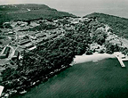

Quarantine station 1930
Quarantine station, St Barbara and North Head, and Echidna Sightings
North Head Sanctuary Foundation is working with Government agencies towards the establishment of Car-rang-gel Sanctuary on North Head at the gateway of Sydney Harbour - a flagship for Australia's environmental resolve and a celebration of our natural and cultural heritage.

If you would like to receive North Head Sanctuary Foundation newsletters via your email, just ask to be put on the mailing list by contacting: northhead@fastmail.com.au
Which Year of Newsletters would you like to visit?